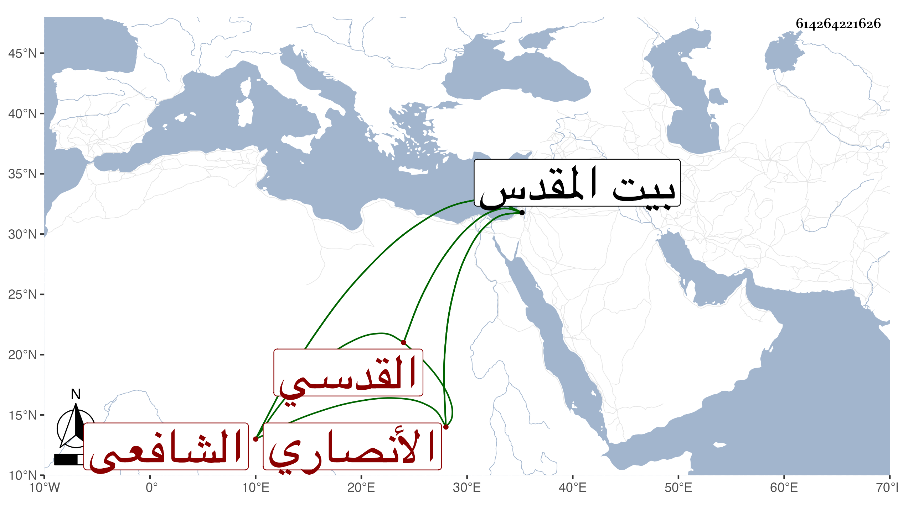

0902Sakhawi.DawLamic.ITO20230111-ara1.EIS1600.614264221626
Biography ID: 614264221626
492
أحمد بن محمد بن محمد بن حامد بن أحمد بن عبد الرحمن بن حميد بن بدران ابن تمام بن درغام بمهملتين ثم معجمة بن كامل الشهاب أبو العباس بن الشمس ابن القاضي الشمس الأنصاري القدسي الشافعي أخو محمد ووالد الشمس أبي حامد الآتيين ويعرف بابن حامد . ولد في سنة ستين وسبعمائة تقريبا وقيل سنة أربع وخمسين ببيت المقدس ونشأ به فحفظ القرآن والشاطبية والمنهاج والألفية والملحة وغيرها وعرض على البرهان بن جماعة وهو كبير في سنة خمس وثمانين وابني القلقشندي إبراهيم بن محمد وسمع على جده السفينة الجرائدية وغيرها وعلى الجلال عبد المنعم الأنصاري جزء أبي الجهم بكماله وغيره وسمع على أبيه أيضا وكذا من لفظ الشهاب بن مثبت المسلسل وغيره وقرأ على الجمال عبد الله بن سليمان الأجاري المالكي الشفا وعلى البرهان بن الشهاب أي محمد صحيح مسلم بل أخبر أنه سمع على البرهان بن جماعة وأبي الخير بن العلائي وابن مرزوق ويحيى الرحبي والعاقولي وكله ممكن وكذا سمع على عبد الرحمن بن يوسف الكالدنسي والشمس الندرومي مجتمعين بحرم القدس في سنة إحدى وسبعين والعلاء بن النقيب وابن الرصاص والتقي القلقشندي وولديه الشمس محمد والبرهان إبراهيم وصهر والده الشمس بن الخطيب والبدر محمود العجلوني والعليمي والشهاب بن الناصح والسراج البلقيني وسرى الدين القاضي وخطيب القدس العماد الكركي والنجم بن جماعة وابن عمه الخطيب عماد الدين إسماعيل وأجاز له بسؤال أبيه الصلاح بن أبي عمر وابن أميلة والبرهان إبراهيم بن أحمد بن إبراهيم ابن فلاح وعبد الوهاب بن السلار والشمس بن قاضي شهبة وابن المحب وآخرون باستدعاء الإمام شمس الدين محمد بن محمد بن يحيى الندرومي مؤرخ بربيع الآخر سنة أربع وسبعين والشيخ محمد القرمي وجماعة وصحب عبد الله البسطامي وأبا بكر الموصلي وسمعه ينشد مرارا :
| نحن في غفلة وفي عمه | والمنايا تخطفن خطف الذباب |
| قل لمن لا يهوله كتفه العص | ى يهيأ لكتفة القصاب |
وأكثر من الاشتغال والتحصيل والسماع وكتب بخطه الكثير وولي مشيخة الفخرية وعرض عليه قضاء القدس قديما بسؤال الشمس الهروي له فيه فأبى ، وكان صالحا زاهدا ناسكا قانعا باليسير دينا خيرا منجمعا عن الناس على طريق السلف طارحا للتكلف تعفف حتى عما كان باسمه من الوظائف ولزم بيته إلا إلى المسجد وصار مقصودا بالدعاء والتبرك به ، أثنى عليه غير واحد وانتفع به ولده بل أخذ عنه الفضلاء ، وحدث بأشياء وصار خاتمة من يروي عن جماعة من شيوخه بتلك النواحي أجاز لي . وأبوه ممن مات في سنة سبع وثمانين وسبعمائة وجده في سنة اثنتين وثمانين وسبعمائة . ومات هو بعد أن ثقل سمعه وأقعد قبل وفاته بنحو ثلاثة أشهر في ظهر يوم الخميس ثاني عشر ذي القعدة سنة أربع وخمسين وصلى بعد العصر عند المحراب الكبير ودفن من يومه بمقبرة البسطامية عند عمه العلاء علي بن حامد رحمه الله وإيانا .
